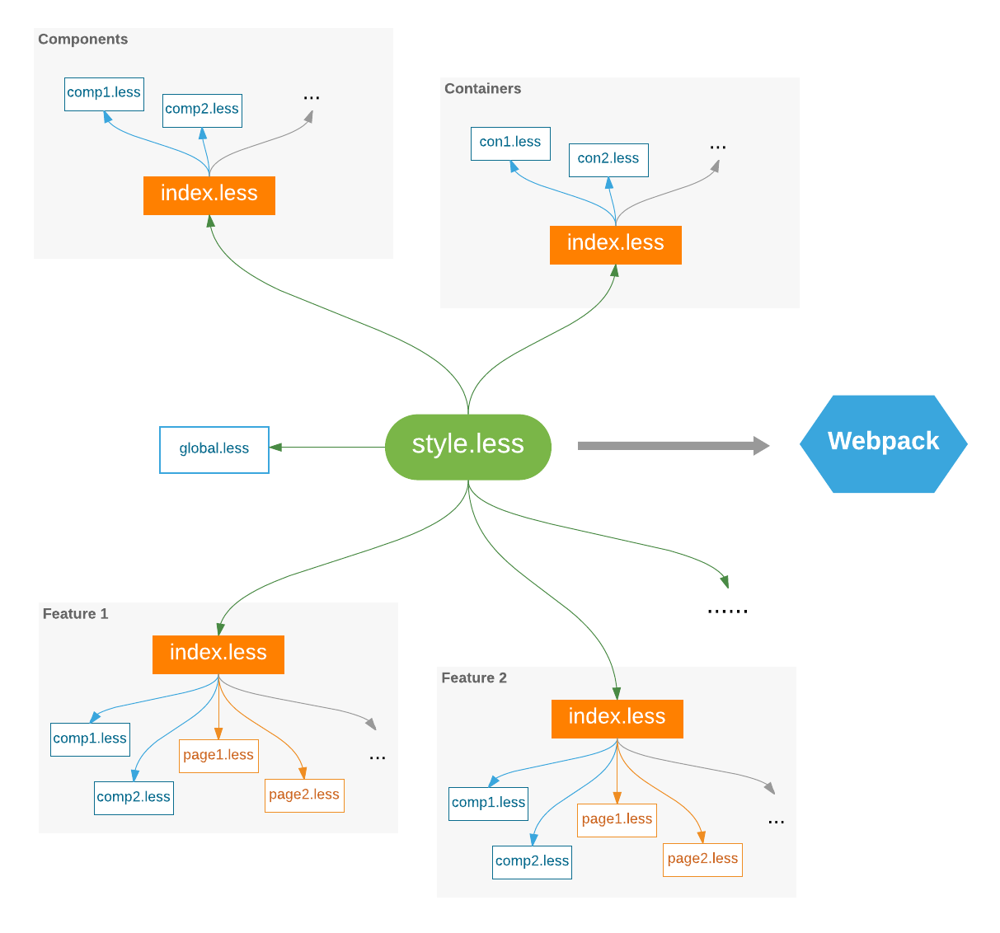

Styling
Rekit uses Less or Scss as the css pre-processor. Unlike many practices import style file in a React component, Rekit recommends to just use Less/Sass itself to manage dependencies. This approach has several advantages:
- Css could be built and generated separtely.
- Importing less from a React component is not a standard way but just a webpack loader's feature.
- Css-loader for webpack generates duplicate Css code for the build if the component is used more than one time.
The approach used by Rekit is intuitive, described by below picture:

In general, styling for a Rekit application follows below several rules:
- Global style is defined in
src/styles/global.less, such as css for body, h1, h2... - Each component has a style file with the same name, for example, component
SimpleNav.jshas style file namedSimpleNave.less. - Each feature has a style file named
style.lesswhich imports all necessary style files for pages and components. All feature scope common style is also defined in the file. - The
src/styles/index.lessis the entry style file which imports all feature'sstyle.lessandglobal.less.
For other scenarios, feel free to use the way you like.